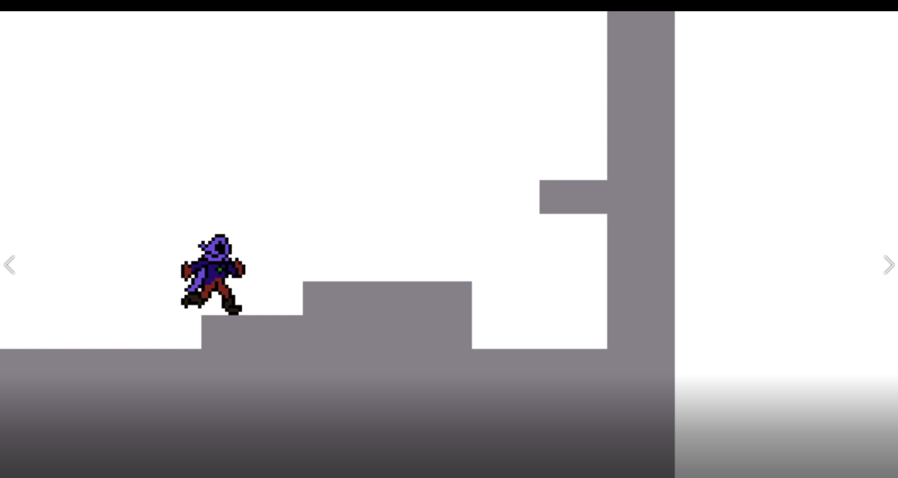

Projects
Jump the Gun

Project Description
Take the climb and escape the caves with nothing but a shotgun and rocket launcher
Individual Contributions
- Implemented systems for animation and character state control for fluid transitions between animation states using Unity’s animator
- Designed game art direction to ensure a visually consistent style
- Created visual effects for weapon trails utilizing Unity’s particle effects system
Campfire Simulator

Project Description
Open ended sandbox where users can mess around with fire physics
Individual Contributions
- Developed a web application made using the canvas Javascript library to simulate a campfire
- Created a dynamic fire particle system which works in tandem with a wood physics system
- Developed controls for various aspects of the fire particle system to tune their behavior and graphics to the user’s will
Pogo Peril

Project Description
Jump for your life as the fiery hands of doom try to pull you down!
Individual Contributions
- Implemented systems for animation flow as well as character state control
- Created dynamic background and foreground elements that change with player elevation
- Created particle systems for player interaction with mobile interfaces
Super Tank Game Deluxe

Project Description
Battle it out with your friends in this local multiplayer tank showdown!
Individual Contributions
- Implemented local multiplayer controls and mechanics pertaining to player controls using Unity’s C# scripting system
- Tested and balanced game mechanics according to player feedback
- Desinged and implemented level based environmental mechanics as well as various level layouts
Depths of Delirium
Project Description
Fight bosses in a one on one duel
Individual Contributions
- Created basic game loop and game object based system utilizing the SDL2 C++ library
- Implemented collision detection and resolution utilizing a B-tree
- Implemented input handling and animation controls
Knight Light

Project Description
Fight the ravenous, undead inhabitants of a dark dungeon
Individual Contributions
- Designed gameplay systems alongside team members and led discussions surrounding implementation
- Developed all visual assets and animations utilizing Aseprite
- Implemented animation transition logic and state controls for all characters with Unity’s C# scripting
- Implemented elements of autonomous agency for enemy characters within the game
Drop Dead

Project Description
Collect items before the clock runs out to stay alive
Individual Contributions
- Led a team of 6 individuals, and assigned tasks to make sure deadlines were met
- Created main gameplay mechanic and iterated through supporting systems with team members
- Developed character and item assets as well as animations utilizing Aseprite, and implemented animation controls in Unity
- Designed the main level layout and setup collisions for the player an enemies
Asteroids Recreation

Project Description
A recreation of Asteroids made entirely in Unity with an additional multiplayer gamemode!
Individual Contributions
- Created all visual assets and VFX
- Developed systems for physics based movement and firing
- Created systems for multiplayer collision detection
Mumbo Jumbo Magic

Project Description
Defeat the underground goblin menace in this magical 2D platformer
Individual Contributions
- Led a team of 4 individuals, set and ensured deadlines were met
- Created all assets using a combination of Photoshop and Aseprite
- Programmed animation controls, collision detection, collision resolution, spacial partitioning, and input controls
- Developed room transitions and level initilization based on file
- Created AI for the goblin boss